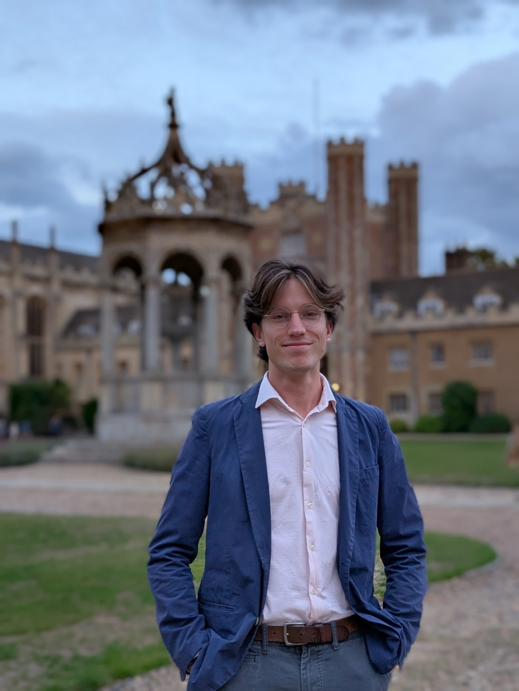

About
I am a PhD candidate in physical oceanography at Delft University of Technology. My research is on coastally trapped waves and on the oceanic waveguide. I am interested in how boundary processes connect to the ocean interior.
Interests
- Coastally trapped waves
- The oceanic waveguide
- Exchange of information between the boundary and the interior
Education
- 2025–present PhD, Physical Oceanography Delft University of Technology, Delft, the Netherlands
- 2022–2025 MSc, Hydraulic Engineering Delft University of Technology, Delft, the Netherlands
- 2018–2021 BSc, Civil Engineering Delft University of Technology, Delft, the Netherlands